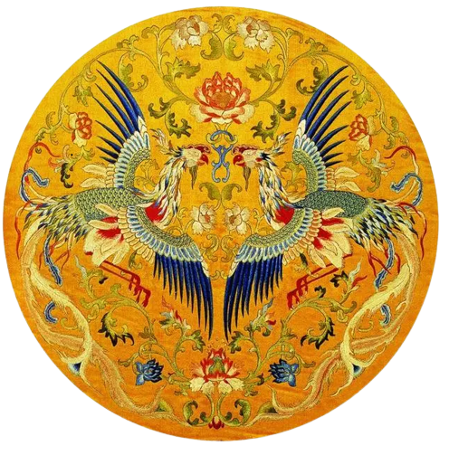
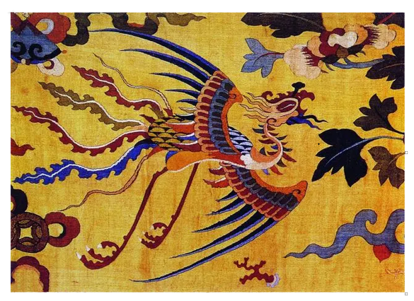
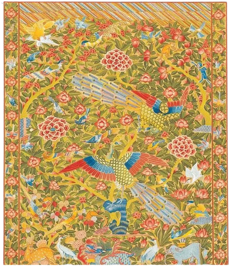

古典刺绣作品


原始社会时人们用纹身、纹面、纹饰服装等方式美化生活，之后人们用线将花纹刺在衣服上，就成为刺绣。美负绝伦的中国古典刺绣图案刺绣，起源于人们对装饰自身的需要。史传黄帝时代就有彩绘花纹的记载。也就是说古代原始人类早懂得用色彩来美化自己。开始时将颜色涂在身上，“称彰身”;再进一步刺在身上，称“文身”;后来就画在衣服上，再发展成绣在服装上。。

原始社会时人们用纹身、纹面、纹饰服装等方式美化生活，之后人们用线将花纹刺在衣服上，就成为刺绣。美负绝伦的中国古典刺绣图案刺绣，起源于人们对装饰自身的需要。史传黄帝时代就有彩绘花纹的记载。也就是说古代原始人类早懂得用色彩来美化自己。开始时将颜色涂在身上，“称彰身”;再进一步刺在身上，称“文身”;后来就画在衣服上，再发展成绣在服装上。。